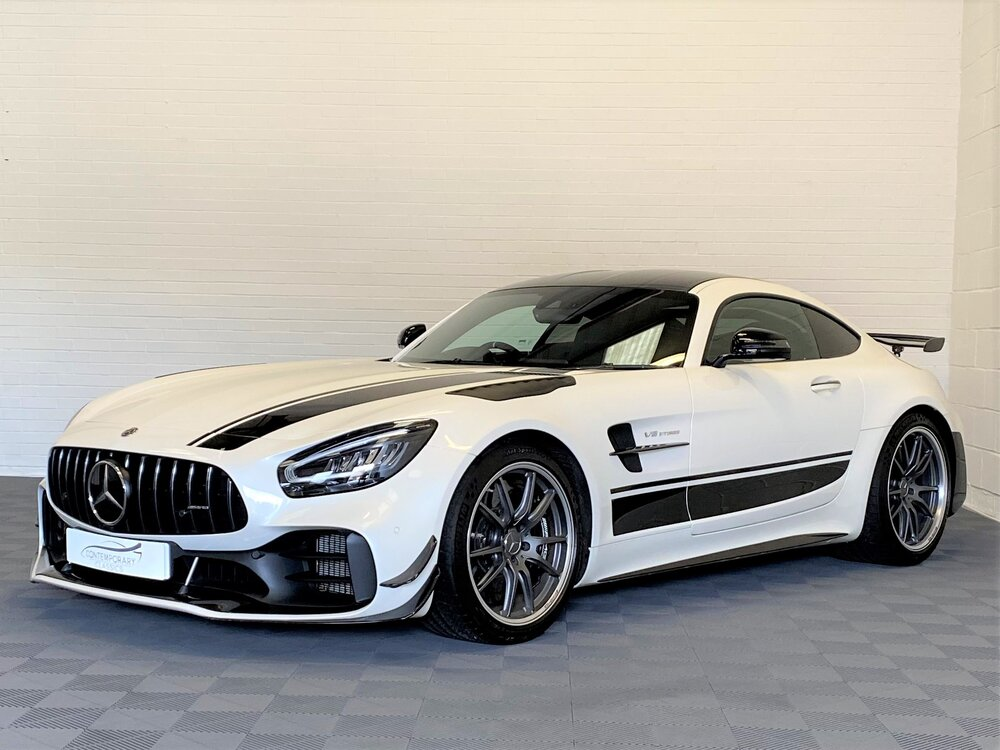

3/5 Mercedes-AMG GT

През 2015 г. Mercedes-Benz благослови автомобилната общност с още един напълно оригинален и брилянтен модел в гамата си - суперавтомобилът GT. С нисък дизайн, който черпи вдъхновение от най-ранните спортни модели на марката, GT е лесно един от най-красивите автомобили на десетилетието.
Неговата отличителна черта - масивният издължен преден капак - е там, за да сгуши забележителен V8, изпращащ блъсканица от до 577 конски сили към задните колела. Той ще направи 0-60 само за 3,5 секунди и ще спре да ускорява едва когато достигне близо 200 mph.